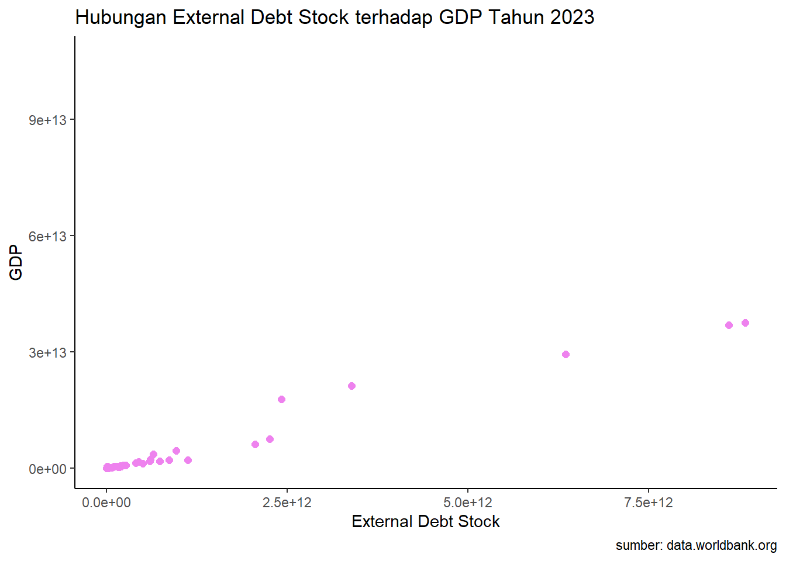

library(tidyverse)
library(readxl)
library(WDI)
library(knitr)
library(ggplot2)
library(dplyr)Pengaruh External Debt Stock terhadap GDP Tahun 2023
Metode Penelitian Politeknik APP Jakarta

1 Pendahuluan
1.1 Latar belakang
Utang luar negeri (external debt) merupakan salah satu instrumen pembiayaan yang sering digunakan oleh negara untuk mendukung pembangunan ekonomi. Meskipun utang dapat memberikan manfaat dalam hal peningkatan investasi dan pertumbuhan ekonomi, terdapat kekhawatiran bahwa utang yang tinggi dapat berdampak negatif terhadap ekonomi suatu negara, termasuk Produk Domestik Bruto (GDP).
Dalam konteks negara berkembang, utang luar negeri sering kali digunakan untuk membiayai proyek-proyek infrastruktur, pendidikan, dan kesehatan yang bertujuan untuk meningkatkan kapasitas produksi dan kualitas hidup masyarakat. Namun, jika utang tidak dikelola dengan baik, hal ini dapat mengakibatkan beban kewajiban yang berat, yang pada gilirannya dapat menghambat pertumbuhan ekonomi dan mengurangi kemampuan negara untuk berinvestasi dalam pembangunan jangka panjang.
Penelitian sebelumnya menunjukkan bahwa terdapat hubungan yang kompleks antara utang luar negeri dan pertumbuhan ekonomi. Di satu sisi, utang dapat merangsang pertumbuhan dengan menyediakan modal yang diperlukan untuk investasi. Di sisi lain, utang yang berlebihan dapat menghasilkan biaya bunga yang tinggi dan mengalihkan sumber daya dari pengeluaran produktif ke pembayaran utang, yang dapat menghambat pertumbuhan GDP.
Faktor-faktor lain, seperti kebijakan moneter, stabilitas politik, dan kondisi ekonomi global, juga dapat memengaruhi hubungan antara utang luar negeri dan GDP. Oleh karena itu, penting untuk mengeksplorasi bagaimana stok utang luar negeri dapat memengaruhi pertumbuhan ekonomi suatu negara, terutama dalam konteks negara berkembang yang sering kali bergantung pada utang luar negeri untuk mendanai pembangunan.
Melalui penelitian ini, diharapkan dapat memberikan pemahaman yang lebih mendalam mengenai dampak stok utang luar negeri terhadap pertumbuhan GDP, serta memberikan rekomendasi bagi pembuat kebijakan dalam merumuskan strategi pengelolaan utang yang berkelanjutan. Penelitian ini juga diharapkan dapat berkontribusi pada literatur yang ada mengenai ekonomi makro dan pengelolaan utang di negara berkembang.
1.2 Ruang lingkup
Penelitian ini menggunakan data yang diperoleh melalui package WDI yang diakses menggunakan perangkat lunak R. Data yang digunakan mencakup dua variabel utama, yaitu External Debt Stock (utang luar negeri) sebagai variabel X dan GDP (Produk Domestik Bruto) sebagai variabel Y. Data tersebut mencakup negara-negara yang terdaftar di World Bank dan merepresentasikan kondisi pada tahun 2023.
1.3 Rumusan masalah
Penelitian ini akan menjawab persoalan mengenai:
- Seberapa besar pengaruh external debt stock terhadap GDP?
- Apa saja faktor yang ditimbulkan dari external debt stock terhadap GDP?
- Apa tantangan yang dihadapi Indonesia external debt stock?
1.4 Tujuan dan manfaat penelitian
Tujuan penelitian ini dirumuskan untuk memberikan manfaat bagi pemerintah dan masyarakat, dengan fokus pada pengaruh external debt stock terhadap GDP indonesia :
1. Bagi Pemerintah
Memberikan rekomendasi kebijakan yang berbasis data untuk meningkatkan kewaspadaan pemerintah akan external debt stock yang mempengaruhi GDP indonesia. Mengidentifikasi strategi yang dapat digunakan pemerintah untuk mengoptimalkan pemanfaatan external debt stock, sehingga dapat mendukung pertumbuhan ekonomi yang berkelanjutan.
2. Bagi Masyarakat
Meningkatkan kesadaran publik mengenai peran external debt stock terhadap GDP indonesia dan dampaknya terhadap kesejahteraan masyarakat. Mendorong partisipasi masyarakat dalam proses pengambilan keputusan terkait external debt stock, dengan memahami implikasi dari kebijakan tersebut terhadap kehidupan sehari-hari mereka.
1.5 Package
Packages yang digunakan antara lain sebagai berikut:
2 Studi pustaka
1. tang Luar Negeri
Utang luar negeri adalah kewajiban keuangan yang dimiliki suatu negara kepada kreditor asing. Menurut Krugman dan Obstfeld (2018), utang luar negeri dapat berfungsi sebagai sumber pembiayaan yang penting untuk mendukung pertumbuhan ekonomi, terutama di negara-negara berkembang yang membutuhkan investasi dalam infrastruktur dan layanan publik.
2. Hubungan antara Utang dan Pertumbuhan Ekonomi
Penelitian oleh Eichengreen dan Hausmann (2005) menunjukkan bahwa utang luar negeri dapat memiliki dampak positif terhadap pertumbuhan ekonomi jika digunakan untuk investasi produktif. Namun, utang yang tinggi juga dapat menimbulkan risiko default dan mempengaruhi stabilitas ekonomi.
3. Dampak Utang terhadap GDP
Beberapa studi empiris menunjukkan bahwa terdapat hubungan non-linear antara utang luar negeri dan pertumbuhan GDP. Misalnya, penelitian oleh Cecchetti et al. (2011) menemukan bahwa setelah suatu ambang batas tertentu, peningkatan utang dapat menghambat pertumbuhan ekonomi, terutama di negara-negara dengan struktur ekonomi yang lemah.
4. Faktor Pengaruh Lainnya
Selain jumlah utang, faktor-faktor seperti kebijakan moneter, stabilitas politik, dan kondisi ekonomi global juga berperan penting dalam menentukan dampak utang luar negeri terhadap GDP. Menurut Aizenman dan Jinjarak (2013), negara-negara dengan kebijakan fiskal yang sehat dan stabilitas politik cenderung dapat mengelola utang dengan lebih baik, sehingga meminimalkan dampak negatif terhadap pertumbuhan ekonomi.
5. Studi Kasus Negara Berkembang
Studi oleh Ocampo dan Rada (2015) menunjukkan bahwa banyak negara berkembang mengalami kesulitan dalam mengelola utang luar negeri mereka, yang sering kali mengakibatkan pertumbuhan ekonomi yang lambat. Penelitian ini menekankan perlunya strategi pengelolaan utang yang lebih efektif untuk mendorong pertumbuhan GDP.
6. Kebijakan Pengelolaan Utang
Kebijakan pengelolaan utang yang baik dapat meningkatkan kemampuan suatu negara untuk memanfaatkan utang luar negeri secara produktif. Menurut Reinhart dan Rogoff (2010), negara yang memiliki kebijakan yang transparan dan akuntabel dalam pengelolaan utang cenderung lebih mampu memanfaatkan utang untuk pertumbuhan ekonomi.
3 Metode penelitian
3.1 Data
penelitian ini menggunakan data tahun 2023 yang diperoleh dari Worldbank, sehingga didapatkan data sebagai berikut:
library(WDI)
nasywa <- WDI(country = "all",
indicator = c("DT.DOD.DECT.CD", "NY.GDP.MKTP.CD"),
start = 2023,
end = 2023)
colnames(nasywa)[colnames(nasywa) %in% c("DT.DOD.DECT.CD", "NY.GDP.MKTP.CD")] <- c("X", "Y")
library(dplyr)
nasywa<- nasywa%>%
select(-iso2c, -iso3c, -year)
library(knitr)
kable(nasywa)| country | X | Y |
|---|---|---|
| Afghanistan | 3.428117e+09 | 1.723305e+10 |
| Africa Eastern and Southern | NA | 1.245472e+12 |
| Africa Western and Central | NA | 7.991060e+11 |
| Albania | 1.136395e+10 | 2.354718e+10 |
| Algeria | 7.315266e+09 | 2.476262e+11 |
| American Samoa | NA | NA |
| Andorra | NA | 3.785067e+09 |
| Angola | 5.703175e+10 | 8.482465e+10 |
| Antigua and Barbuda | NA | 2.033085e+09 |
| Arab World | NA | 3.512421e+12 |
| Argentina | 2.661673e+11 | 6.460753e+11 |
| Armenia | 1.583883e+10 | 2.408575e+10 |
| Aruba | NA | 3.648573e+09 |
| Australia | NA | 1.728057e+12 |
| Austria | NA | 5.116852e+11 |
| Azerbaijan | 1.453268e+10 | 7.235618e+10 |
| Bahamas, The | NA | 1.433850e+10 |
| Bahrain | NA | 4.607987e+10 |
| Bangladesh | 1.014475e+11 | 4.374153e+11 |
| Barbados | NA | 6.720733e+09 |
| Belarus | 3.670454e+10 | 7.185738e+10 |
| Belgium | NA | 6.447828e+11 |
| Belize | 1.509919e+09 | 3.066850e+09 |
| Benin | 1.248275e+10 | 1.967605e+10 |
| Bermuda | NA | 8.141700e+09 |
| Bhutan | 3.269071e+09 | NA |
| Bolivia | 1.630694e+10 | 4.513540e+10 |
| Bosnia and Herzegovina | 1.401019e+10 | 2.751478e+10 |
| Botswana | 2.078816e+09 | 1.939608e+10 |
| Brazil | 6.071155e+11 | 2.173666e+12 |
| British Virgin Islands | NA | NA |
| Brunei Darussalam | NA | 1.512829e+10 |
| Bulgaria | NA | 1.024077e+11 |
| Burkina Faso | 1.039739e+10 | 2.032462e+10 |
| Burundi | 1.042822e+09 | 2.642162e+09 |
| Cabo Verde | 2.451446e+09 | 2.533819e+09 |
| Cambodia | 2.253361e+10 | 4.233565e+10 |
| Cameroon | 1.529927e+10 | 4.927941e+10 |
| Canada | NA | 2.142471e+12 |
| Caribbean small states | NA | 5.329616e+10 |
| Cayman Islands | NA | 7.139429e+09 |
| Central African Republic | 1.020876e+09 | 2.555492e+09 |
| Central Europe and the Baltics | NA | 2.267761e+12 |
| Chad | 3.214042e+09 | 1.314933e+10 |
| Channel Islands | NA | 1.250793e+10 |
| Chile | NA | 3.355333e+11 |
| China | 2.420211e+12 | 1.779478e+13 |
| Colombia | 1.975052e+11 | 3.634938e+11 |
| Comoros | 4.093405e+08 | 1.352381e+09 |
| Congo, Dem. Rep. | 1.106689e+10 | 6.638329e+10 |
| Congo, Rep. | 7.779156e+09 | 1.532106e+10 |
| Costa Rica | 3.902512e+10 | 8.649794e+10 |
| Cote d’Ivoire | 3.654788e+10 | 7.887549e+10 |
| Croatia | NA | 8.439380e+10 |
| Cuba | NA | NA |
| Curacao | NA | 3.281419e+09 |
| Cyprus | NA | 3.388693e+10 |
| Czechia | NA | 3.432079e+11 |
| Denmark | NA | 4.070919e+11 |
| Djibouti | 3.428663e+09 | 4.098531e+09 |
| Dominica | 5.981359e+08 | 6.539926e+08 |
| Dominican Republic | 5.225663e+10 | 1.214443e+11 |
| Early-demographic dividend | NA | 1.494590e+13 |
| East Asia & Pacific (excluding high income) | 3.392852e+12 | 2.116284e+13 |
| East Asia & Pacific (IDA & IBRD countries) | NA | 2.113671e+13 |
| East Asia & Pacific | NA | 3.078018e+13 |
| Ecuador | 6.056362e+10 | 1.188448e+11 |
| Egypt, Arab Rep. | 1.680623e+11 | 3.960025e+11 |
| El Salvador | 2.274150e+10 | 3.401562e+10 |
| Equatorial Guinea | NA | 1.233755e+10 |
| Eritrea | 7.127791e+08 | NA |
| Estonia | NA | 4.129125e+10 |
| Eswatini | 1.240688e+09 | 4.442876e+09 |
| Ethiopia | 3.329027e+10 | 1.636979e+11 |
| Euro area | NA | 1.578069e+13 |
| Europe & Central Asia (excluding high income) | 1.121762e+12 | 2.129704e+12 |
| Europe & Central Asia (IDA & IBRD countries) | NA | 5.497904e+12 |
| Europe & Central Asia | NA | 2.755407e+13 |
| European Union | NA | 1.859072e+13 |
| Faroe Islands | NA | 3.907324e+09 |
| Fiji | 3.347682e+09 | 5.442047e+09 |
| Finland | NA | 2.955323e+11 |
| Fragile and conflict affected situations | NA | 1.937937e+12 |
| France | NA | 3.051832e+12 |
| French Polynesia | NA | NA |
| Gabon | 7.588100e+09 | 1.938840e+10 |
| Gambia, The | 1.325049e+09 | 2.396111e+09 |
| Georgia | 2.446754e+10 | 3.077783e+10 |
| Germany | NA | 4.525704e+12 |
| Ghana | 4.374198e+10 | 7.637040e+10 |
| Gibraltar | NA | NA |
| Greece | NA | 2.434983e+11 |
| Greenland | NA | NA |
| Grenada | 7.271419e+08 | 1.316733e+09 |
| Guam | NA | NA |
| Guatemala | 2.536485e+10 | 1.044502e+11 |
| Guinea-Bissau | 1.128037e+09 | 2.048348e+09 |
| Guinea | 5.164136e+09 | 2.219941e+10 |
| Guyana | 2.952574e+09 | 1.715951e+10 |
| Haiti | 2.637610e+09 | 1.985083e+10 |
| Heavily indebted poor countries (HIPC) | NA | 1.129947e+12 |
| High income | NA | 6.827649e+13 |
| Honduras | 1.282058e+10 | 3.440051e+10 |
| Hong Kong SAR, China | NA | 3.808122e+11 |
| Hungary | NA | 2.123889e+11 |
| IBRD only | NA | 3.878930e+13 |
| Iceland | NA | 3.132512e+10 |
| IDA & IBRD total | NA | 4.166901e+13 |
| IDA blend | NA | 1.068438e+12 |
| IDA only | 7.363180e+11 | 1.814047e+12 |
| IDA total | NA | 2.880515e+12 |
| India | 6.467871e+11 | 3.567552e+12 |
| Indonesia | 4.060544e+11 | 1.371171e+12 |
| Iran, Islamic Rep. | 9.900873e+09 | 4.046257e+11 |
| Iraq | 2.033139e+10 | 2.508428e+11 |
| Ireland | NA | 5.513949e+11 |
| Isle of Man | NA | NA |
| Israel | NA | 5.136111e+11 |
| Italy | NA | 2.300941e+12 |
| Jamaica | 1.534942e+10 | 1.942336e+10 |
| Japan | NA | 4.204495e+12 |
| Jordan | 4.462984e+10 | 5.096748e+10 |
| Kazakhstan | 1.631545e+11 | 2.626419e+11 |
| Kenya | 4.291003e+10 | 1.080386e+11 |
| Kiribati | NA | 2.792089e+08 |
| Korea, Dem. People’s Rep. | NA | NA |
| Korea, Rep. | NA | 1.712793e+12 |
| Kosovo | 4.242269e+09 | 1.046822e+10 |
| Kuwait | NA | 1.637049e+11 |
| Kyrgyz Republic | 1.011505e+10 | 1.398763e+10 |
| Lao PDR | 2.008864e+10 | 1.584316e+10 |
| Late-demographic dividend | NA | 2.834848e+13 |
| Latin America & Caribbean (excluding high income) | 2.053962e+12 | 6.057470e+12 |
| Latin America & Caribbean | NA | 7.100142e+12 |
| Latin America & the Caribbean (IDA & IBRD countries) | NA | 6.779682e+12 |
| Latvia | NA | 4.224785e+10 |
| Least developed countries: UN classification | NA | 1.516989e+12 |
| Lebanon | 6.629646e+10 | NA |
| Lesotho | 1.775614e+09 | 2.117962e+09 |
| Liberia | 2.078057e+09 | 4.240000e+09 |
| Libya | NA | 4.509646e+10 |
| Liechtenstein | NA | NA |
| Lithuania | NA | 7.978988e+10 |
| Low & middle income | 8.836507e+12 | 3.753377e+13 |
| Low income | 2.319755e+11 | 6.635292e+11 |
| Lower middle income | 2.257898e+12 | 7.439509e+12 |
| Luxembourg | NA | 8.575501e+10 |
| Macao SAR, China | NA | 4.580307e+10 |
| Madagascar | 6.452329e+09 | 1.579011e+10 |
| Malawi | 3.604446e+09 | 1.271215e+10 |
| Malaysia | NA | 3.997052e+11 |
| Maldives | 4.000222e+09 | 6.590894e+09 |
| Mali | 6.457154e+09 | 2.066179e+10 |
| Malta | NA | 2.232864e+10 |
| Marshall Islands | NA | 2.593000e+08 |
| Mauritania | 4.603557e+09 | 1.065171e+10 |
| Mauritius | 1.925234e+10 | 1.464452e+10 |
| Mexico | 5.959177e+11 | 1.789114e+12 |
| Micronesia, Fed. Sts. | NA | 4.600000e+08 |
| Middle East & North Africa (excluding high income) | 4.426693e+11 | 1.671175e+12 |
| Middle East & North Africa (IDA & IBRD countries) | NA | 1.653767e+12 |
| Middle East & North Africa | NA | 4.320567e+12 |
| Middle income | 8.604532e+12 | 3.687812e+13 |
| Moldova | 1.063868e+10 | 1.653944e+10 |
| Monaco | NA | 9.995351e+09 |
| Mongolia | 3.432129e+10 | 2.032512e+10 |
| Montenegro | 8.616499e+09 | 7.530593e+09 |
| Morocco | 6.926728e+10 | 1.444171e+11 |
| Mozambique | 6.684772e+10 | 2.095422e+10 |
| Myanmar | 1.216210e+10 | 6.675762e+10 |
| Namibia | NA | 1.235103e+10 |
| Nauru | NA | 1.541703e+08 |
| Nepal | 9.968496e+09 | 4.090807e+10 |
| Netherlands | NA | 1.154361e+12 |
| New Caledonia | NA | NA |
| New Zealand | NA | 2.521755e+11 |
| Nicaragua | 1.516341e+10 | 1.782922e+10 |
| Niger | 5.612995e+09 | 1.681917e+10 |
| Nigeria | 1.024817e+11 | 3.638463e+11 |
| North America | NA | 2.987132e+13 |
| North Macedonia | 1.261429e+10 | 1.576362e+10 |
| Northern Mariana Islands | NA | NA |
| Norway | NA | 4.853108e+11 |
| Not classified | NA | NA |
| OECD members | NA | 6.474656e+13 |
| Oman | NA | 1.088109e+11 |
| Other small states | NA | 2.410865e+11 |
| Pacific island small states | NA | 1.115070e+10 |
| Pakistan | 1.308474e+11 | 3.379123e+11 |
| Palau | NA | 2.818491e+08 |
| Panama | NA | 8.331818e+10 |
| Papua New Guinea | 1.532062e+10 | 3.072924e+10 |
| Paraguay | 2.636132e+10 | 4.295626e+10 |
| Peru | 9.006757e+10 | 2.676032e+11 |
| Philippines | 1.214021e+11 | 4.371464e+11 |
| Poland | NA | 8.092007e+11 |
| Portugal | NA | 2.891143e+11 |
| Post-demographic dividend | NA | 6.048525e+13 |
| Pre-demographic dividend | NA | 1.566942e+12 |
| Puerto Rico | NA | 1.179023e+11 |
| Qatar | NA | 2.130028e+11 |
| Romania | NA | 3.507759e+11 |
| Russian Federation | NA | 2.021421e+12 |
| Rwanda | 1.138398e+10 | 1.409777e+10 |
| Samoa | 4.324949e+08 | 9.381894e+08 |
| San Marino | NA | NA |
| Sao Tome and Principe | 4.542730e+08 | 6.789763e+08 |
| Saudi Arabia | NA | 1.067583e+12 |
| Senegal | 3.995011e+10 | 3.084833e+10 |
| Serbia | 4.900013e+10 | 8.134266e+10 |
| Seychelles | NA | 2.141450e+09 |
| Sierra Leone | 2.381922e+09 | 6.411870e+09 |
| Singapore | NA | 5.014275e+11 |
| Sint Maarten (Dutch part) | NA | 1.627777e+09 |
| Slovak Republic | NA | 1.329083e+11 |
| Slovenia | NA | 6.914847e+10 |
| Small states | NA | 3.055467e+11 |
| Solomon Islands | 5.278176e+08 | 1.633319e+09 |
| Somalia | 3.022834e+09 | 1.096852e+10 |
| South Africa | 1.657866e+11 | 3.806993e+11 |
| South Asia (IDA & IBRD) | NA | 4.494987e+12 |
| South Asia | 9.614538e+11 | 4.494987e+12 |
| South Sudan | NA | NA |
| Spain | NA | 1.620091e+12 |
| Sri Lanka | 6.170595e+10 | 8.435686e+10 |
| St. Kitts and Nevis | NA | 1.055500e+09 |
| St. Lucia | 1.086264e+09 | 2.430148e+09 |
| St. Martin (French part) | NA | NA |
| St. Vincent and the Grenadines | 6.285087e+08 | 1.065963e+09 |
| Sub-Saharan Africa (excluding high income) | 8.638087e+11 | 2.042437e+12 |
| Sub-Saharan Africa (IDA & IBRD countries) | NA | 2.044578e+12 |
| Sub-Saharan Africa | NA | 2.044578e+12 |
| Sudan | 2.258057e+10 | 1.092655e+11 |
| Suriname | 4.047563e+09 | 3.455146e+09 |
| Sweden | NA | 5.849605e+11 |
| Switzerland | NA | 8.849404e+11 |
| Syrian Arab Republic | 4.875543e+09 | NA |
| Tajikistan | 6.872766e+09 | 1.206060e+10 |
| Tanzania | 3.459795e+10 | 7.906240e+10 |
| Thailand | 1.936262e+11 | 5.149687e+11 |
| Timor-Leste | 3.073840e+08 | 2.079917e+09 |
| Togo | 3.375209e+09 | 9.171262e+09 |
| Tonga | 1.964535e+08 | NA |
| Trinidad and Tobago | NA | 2.737229e+10 |
| Tunisia | 4.127870e+10 | 4.852960e+10 |
| Turkiye | 4.998425e+11 | 1.118253e+12 |
| Turkmenistan | 3.917748e+09 | 6.062886e+10 |
| Turks and Caicos Islands | NA | 1.402054e+09 |
| Tuvalu | NA | 6.228031e+07 |
| Uganda | 1.939347e+10 | 4.876896e+10 |
| Ukraine | 1.766455e+11 | 1.787570e+11 |
| United Arab Emirates | NA | 5.141304e+11 |
| United Kingdom | NA | 3.380855e+12 |
| United States | NA | 2.772071e+13 |
| Upper middle income | 6.346633e+12 | 2.944002e+13 |
| Uruguay | NA | 7.724083e+10 |
| Uzbekistan | 5.918435e+10 | 1.015918e+11 |
| Vanuatu | 4.706637e+08 | 1.126313e+09 |
| Venezuela, RB | NA | NA |
| Viet Nam | 1.418496e+11 | 4.297170e+11 |
| Virgin Islands (U.S.) | NA | NA |
| West Bank and Gaza | NA | 1.742080e+10 |
| World | NA | 1.061717e+14 |
| Yemen, Rep. | 7.283022e+09 | NA |
| Zambia | 2.957893e+10 | 2.757796e+10 |
| Zimbabwe | 1.421339e+10 | 3.523137e+10 |
library(writexl)
write_xlsx(nasywa,"nasywa.xlsx")
View(nasywa)library("ggplot2")
library("readxl")
library("dplyr")
ggplot(data=nasywa,aes(x=X,y=Y))+
geom_point(color="violet",size=2)+
labs(title="Hubungan External Debt Stock terhadap GDP Tahun 2023",
x="External Debt Stock",
y="GDP",
caption = "sumber: data.worldbank.org")+
theme_classic()
3.2 Metode analisis
Penelitian ini menggunakan metode regresi univariat atau Ordinary Least Square (OLS) dengan satu variabel independen. Tujuan penelitian ini adalah untuk menganalisis hubungan antara utang luar negeri suatu negara dengan Produk Domestik Bruto (GDP). Model yang digunakan dirancang secara spesifik untuk menggambarkan keterkaitan antara kedua variabel, sebagai berikut:
\[ y_{t}=\beta_0 + \beta_1 x_t+\mu_t \] di mana \(y_t\) adalah GDP dan \(x_t\) adalah External Debt Stock.
4 Pembahasan
4.1 Pembahasan masalah
Regresi yang telah dilakukan, menghasilkan data sebgai berikut:
| variable | Coefficients |
|---|---|
| Intercept | -8.355e+10 |
| X | 4.454e+00 |
| p-value | < 2.2e-16 |
| Multiple R-squared | 0.9702 |
| Adjusted R-squared | 0.97 |
Sehingga dapat di implementasikan sebagai berikut: \[ y_{t}=\ (-8.355e+10) + \ (4.454e+00)+\mu_t \]
Koefisien intercept (β0) sebesar -8.355e+10 menunjukkan bahwa jika utang luar negeri(X) bernilai nol, GDP (Y) diprediksi sebesar −83.55 miliar. Namun, dalam konteks ekonomi, nilai ini hampir tidak mungkin suatu negara memiliki utang luar negeri nol. Koefisien X(β1) sebesar 4.454e+00 menunjukkan bahwa setiap peningkatan satu satuan pada utang luar negeri diasosiasikan dengan peningkatan GDP sebesar 4.454 unit. Koefisien ini signifikan secara statistik, dengan p-value < 2e-16, yang menunjukkan hubungan kuat antara utang luar negeri dan GDP.
Hubungan positif tidak selalu berarti bahwa utang secara langsung meningkatkan GDP. Kemungkinan besar, negara-negara dengan GDP besar juga memiliki kapasitas untuk mengambil utang lebih banyak karena mereka dianggap lebih mampu membayar kembali utang tersebut.
Koefisien positif bisa terjadi jika sebagian besar negara dalam data penelitian menggunakan utang mereka untuk kegiatan produktif seperti pembangunan infrastruktur atau peningkatan kapasitas industri. Hal ini membantu meningkatkan output ekonomi yang direfleksikan dalam GDP.
4.2 Analisis masalah
Hasil regresinya adalah
library(readxl)
nasywa<-read_excel("nasywa.xlsx")
reg<-lm(Y~X,data=nasywa)
summary(reg)
Call:
lm(formula = Y ~ X, data = nasywa)
Residuals:
Min 1Q Median 3Q Max
-3.007e+12 -5.134e+10 5.576e+10 8.144e+10 7.099e+12
Coefficients:
Estimate Std. Error t value Pr(>|t|)
(Intercept) -8.355e+10 9.360e+10 -0.893 0.374
X 4.454e+00 7.008e-02 63.556 <2e-16 ***
---
Signif. codes: 0 '***' 0.001 '**' 0.01 '*' 0.05 '.' 0.1 ' ' 1
Residual standard error: 1.013e+12 on 124 degrees of freedom
(140 observations deleted due to missingness)
Multiple R-squared: 0.9702, Adjusted R-squared: 0.97
F-statistic: 4039 on 1 and 124 DF, p-value: < 2.2e-16Median residual yang positif (5.576e+10) menunjukkan bahwa sebagian besar data lebih cenderung memberikan prediksi lebih besar dari nilai observasi. Model ini memiliki kecocokan yang sangat baik dengan data, dengan Multiple R-squared sebesar 0.9702, yang berarti sekitar 97.02% variasi dalam Y dapat dijelaskan oleh X. Nilai Adjusted R-squared yang sedikit lebih rendah (0.97) juga mendukung kecocokan model setelah mempertimbangkan jumlah prediktor yang digunakan.
Statistik F sebesar 4039 dengan nilai p < 2.2e-16 mengindikasikan bahwa model secara keseluruhan signifikan, yang berarti bahwa variabel X memiliki pengaruh yang sangat kuat terhadap Y. Meskipun model ini menunjukkan kecocokan yang sangat baik dan kemampuan prediksi yang tinggi, masalah residual yang sangat besar perlu diperhatikan, karena dapat menunjukkan adanya outliers atau adanya variabel lain yang belum dimasukkan dalam model. Secara keseluruhan, model ini dapat diandalkan dalam menjelaskan hubungan antara X dan Y, namun analisis lebih lanjut diperlukan untuk menangani masalah residual yang besar.
5 Kesimpulan
Kesimpulan dari penelitian ini menunjukkan bahwa utang luar negeri memiliki pengaruh signifikan terhadap Produk Domestik Bruto (GDP) di negara berkembang, khususnya Indonesia. Berdasarkan analisis regresi yang dilakukan, ditemukan bahwa setiap peningkatan satu unit pada stok utang luar negeri berhubungan dengan peningkatan GDP sebesar 4.454 unit. Koefisien regresi yang signifikan dengan nilai p-value yang sangat kecil menunjukkan adanya hubungan yang kuat antara kedua variabel tersebut. Model yang digunakan dalam penelitian ini juga menunjukkan kecocokan yang sangat baik dengan data, dengan nilai R-squared sebesar 0.9702, yang berarti bahwa 97.02% variasi dalam GDP dapat dijelaskan oleh stok utang luar negeri.
Namun, meskipun terdapat hubungan positif antara utang luar negeri dan GDP, perlu dicatat bahwa utang yang tinggi bisa berisiko jika tidak dikelola dengan baik. Sumber daya yang digunakan untuk membayar utang bisa mengalihkan perhatian dari pengeluaran produktif, sehingga mempengaruhi pertumbuhan ekonomi dalam jangka panjang.
6 Referensi
https://id.tradingeconomics.com Trade Economic
https://www.bps.go.id/id BPS
https://www.worldbank.org/ext/en/home World Bank
Aizenman, J., & Jinjarak, Y. (2013). The Financial Crisis and Its Aftermath: What’s the New Normal? Journal of International Money and Finance.
Cecchetti, S. G., Mohanty, M. S., & Zampolli, F. (2011). The Real Effects of Debt. BIS Working Papers.
Eichengreen, B., & Hausmann, R. (2005). Other People’s Money: Debt Denomination and Financial Instability in Emerging Market Economies. University of Chicago Press.
Krugman, P., & Obstfeld, M. (2018). International Economics: Theory and Policy. Pearson. Ocampo, J. A., & Rada, C. (2015). The Economics of the Global Financial Crisis. Cambridge University Press.
Reinhart, C. M., & Rogoff, K. S. (2010). This Time Is Different: Eight Centuries of Financial Folly. Princeton University Press.